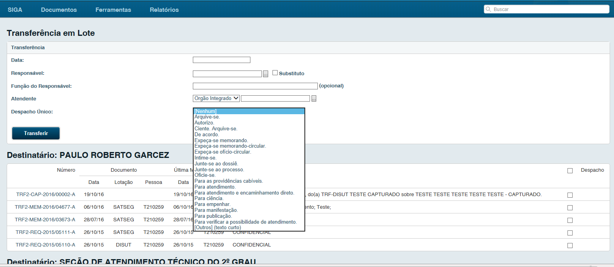
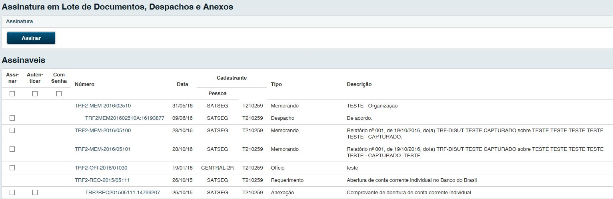
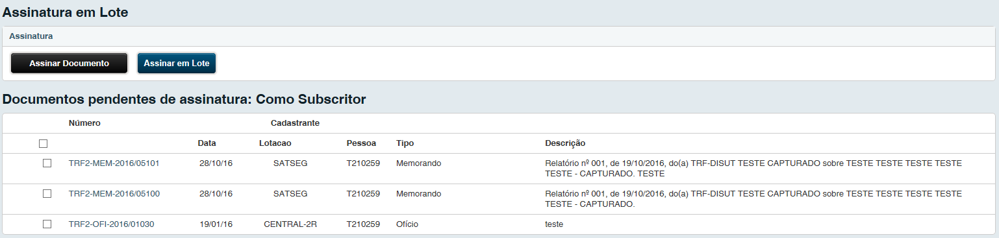
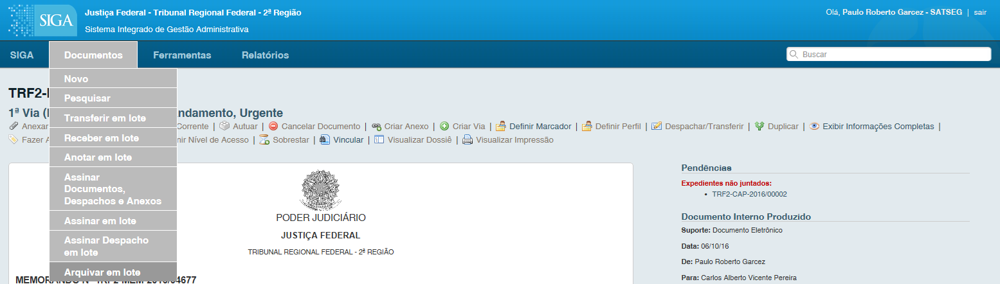

Operações em Lote¶
Transferir em Lote¶
Para executar a transferência, acesse a funcionalidade através da opção, Siga > Documentos > Transferir em lote.

Através desta opção é permitido visualizar a tela de transferência, contendo todos os documentos possíveis de serem transferidos, ou seja, todos os que estão com o status ‘aguardando andamento’.
Na tela de transferência, selecione todos os documentos desejados para transferência:
- Na tabela transferência, preencha o campo ‘Data’, ‘responsável’ (a pessoa responsável pela transferência), atendente (para onde os documentos estão sendo transferidos) e o tipo de despacho, se for comum a todos;
- Ao marcar o campo “Despacho”, automaticamente todos os documentos são selecionados para transferência;
- Para os despachos específicos pra cada documento, pode-se optar, escolhendo, em cada documento, o seu tipo de despacho;
- Não é possível criar um despacho longo para mais de um documento simultaneamente;
Após acessar o botão ‘Transferir’ o sistema apresentará o protocolo de transferência, que será entregue juntamente com os documentos físicos.
Receber em Lote¶
Para executar o recebimento, acesse a funcionalidade através da opção, Siga > Documentos > Receber em lote.

Na tela de recebimento em lote, serão apresentados todos os documentos possíveis de serem recebidos, ou seja, todos os que estão com status ‘A receber (Físico)’. Lembrando que, documentos eletrônicos não dispõem dessa funcionalidade, porque quando se acessa um documento com status de caixa(digital), automaticamente ele é recebido pelo usuário.

- Ao marcar o 1º campo, automaticamente todos os documentos são selecionados para transferência;
- Caso não queira receber todos os documentos selecione os documentos desejados para o recebimento;
- Finalize a operação acessando o botão ‘Receber’.
Anotar em Lote¶
Para executar a Anotação em Lote, acesse a funcionalidade através da opção, Siga > Documentos > Anotar em lote.

Na tela de anotação em lote, serão apresentados todos os documentos possíveis de receberem anotações, ou seja, todos os que estão com status ‘Aguardando Andamento’ e/ou “Pendente de Assinatura”.
Lembrando que, documentos eletrônicos não dispõem dessa funcionalidade, porque quando se acessa um documento com status de caixa(digital), automaticamente ele é recebido pelo usuário.

Selecione todos os documentos desejados para anotar, finalize a operação acessando o botão ‘Anotar’.
- Ao marcar o 1º campo, automaticamente todos os documentos são selecionados para anotar;
- Caso não queira anotar todos os documentos selecione os documentos desejados para a anotação;
- Digite a anotação comum e clique em “Ok”.
- Finalize a operação acessando o botão ‘Anotar em Lote’.
Assinar Documentos, Despachos e Anexos¶
Para executar a Assinatura em Lote de Documentos, Despachos e Anexos acesse a funcionalidade através da opção, Siga > Documentos > Assinar Documentos, Despachos e Anexos.

Na tela de assinatura em lote de Documentos, Despachos e Anexos, serão apresentados todos os documentos possíveis de receberem assinatura, ou seja, todos os que estão com status “Pendente de Assinatura”.
- Ao marcar o 1º campo, automaticamente todos os documentos são selecionados para assinatura;
- Caso não queira assinar todos os documentos selecione os documentos desejados para a assinatura;
- Finalize a operação acessando o botão ‘Assinar’.
Assinar em Lote¶
Para executar a Assinatura em Lote, acesse a funcionalidade através da opção, Siga > Documentos > Assinar em lote.

Na tela de assinatura em lote, serão apresentados todos os documentos possíveis de receberem assinatura, ou seja, todos os que estão com status “Pendente de Assinatura”.
- Ao marcar o 1º campo, automaticamente todos os documentos são selecionados para assinatura;
- Caso não queira assinar todos os documentos selecione os documentos desejados para a assinatura;
- Finalize a operação acessando o botão ‘Assinar em Lote’.
Assinar Despacho em Lote¶
Para assinar despacho em lote, acesse a funcionalidade através da opção Siga > Documentos > Assinar Despacho em Lote.

Na tela de assinar despacho em lote, serão apresentados todos os documentos possíveis de serem assinados, ou seja, todos os que estão com status ‘Despacho Pendente de Assinatura’.

- Ao marcar o 1º campo, automaticamente todos os documentos são selecionados para assinatura;
- Caso não queira assinar todos os documentos selecione os documentos desejados para a assinatura;
- Finalize a operação acessando o botão ‘Assinar em Lote’
Arquivar em Lote¶
Para arquivar em lote, acesse a funcionalidade através da opção Siga > Documentos > Arquivar em Lote.
Na tela de arquivamento em lote, serão apresentados todos os documentos possíveis de serem arquivados, ou seja, todos os que estão com status ‘aguardando andamento’.

- Ao marcar o 1º campo, automaticamente todos os documentos são selecionados para arquivamento;
- Caso não queira arquivar todos os documentos selecione os documentos desejados para arquivamento;
- Finalize a operação acessando o botão ‘Arquivar’